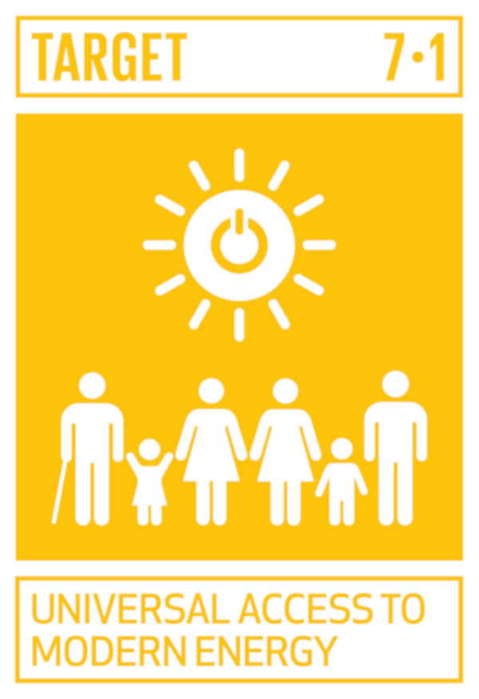
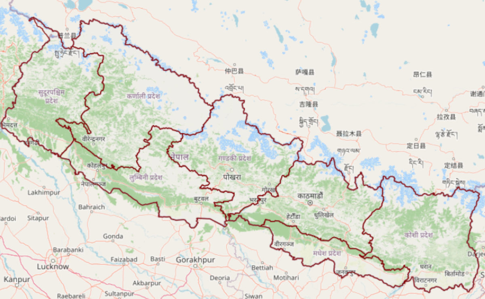
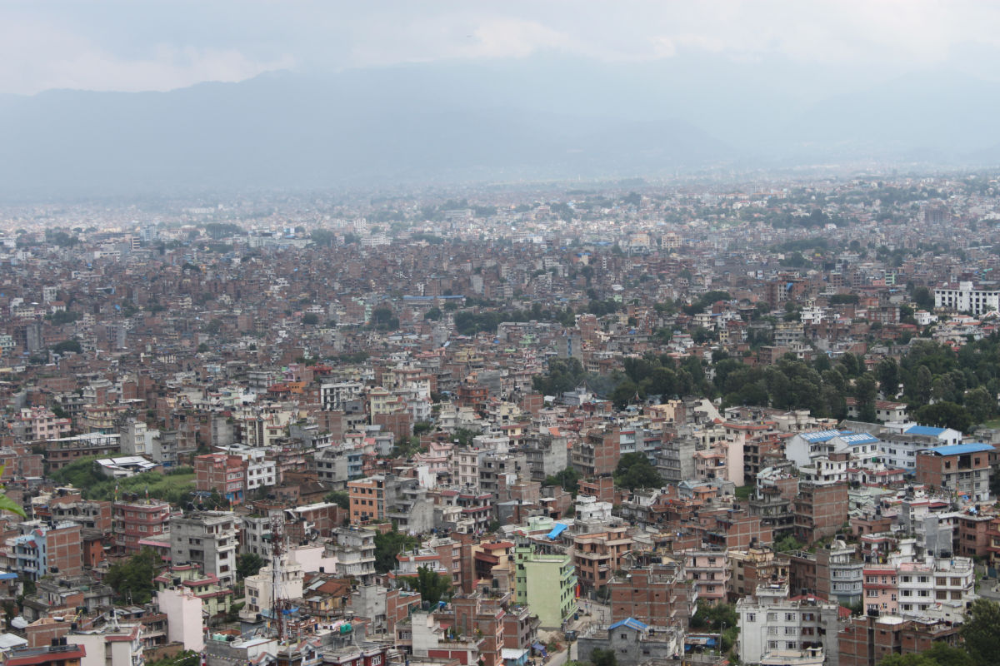
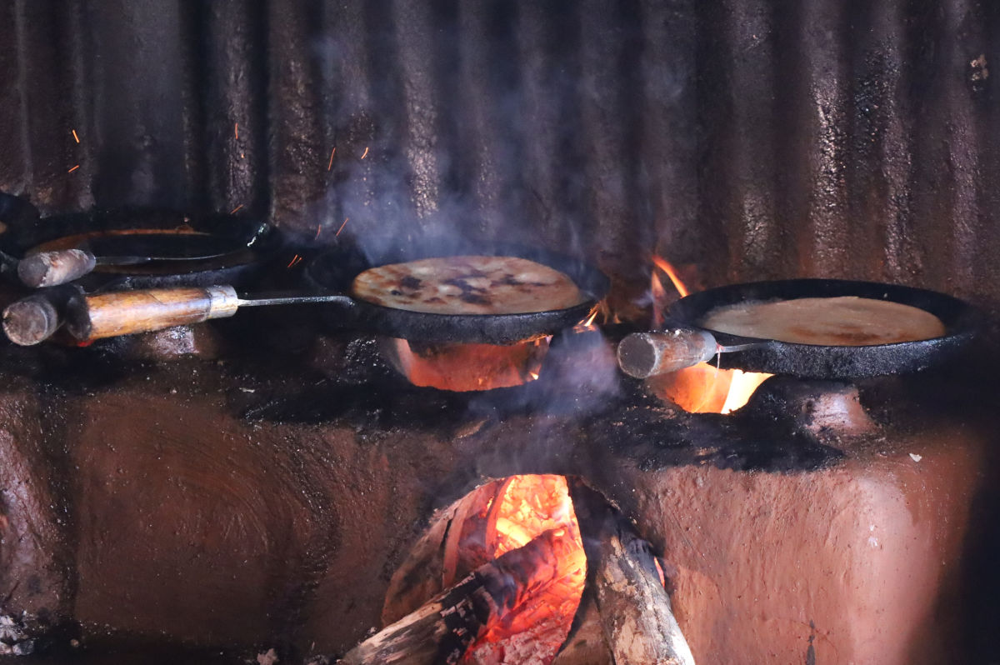
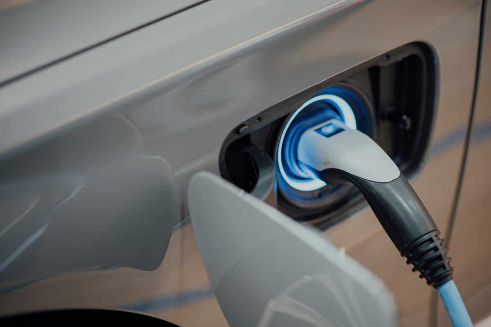
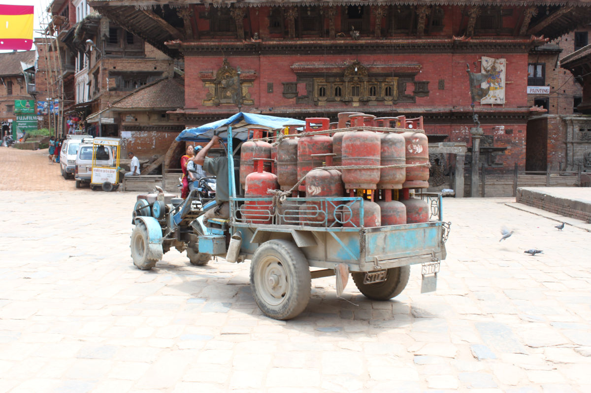
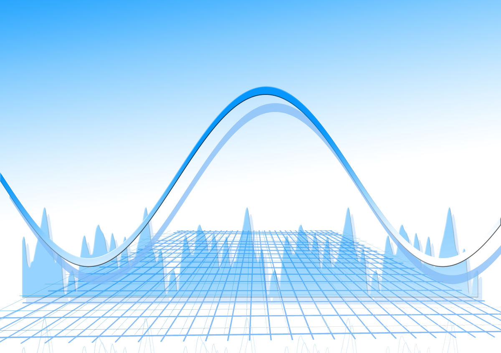
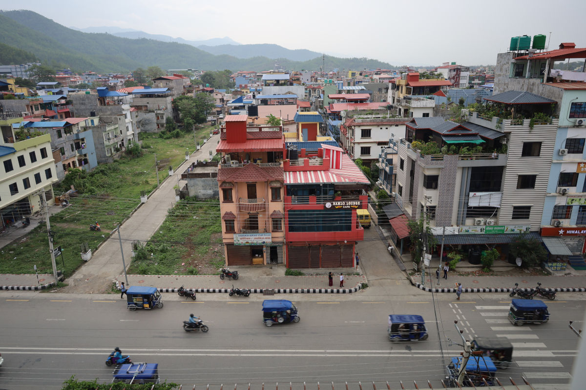
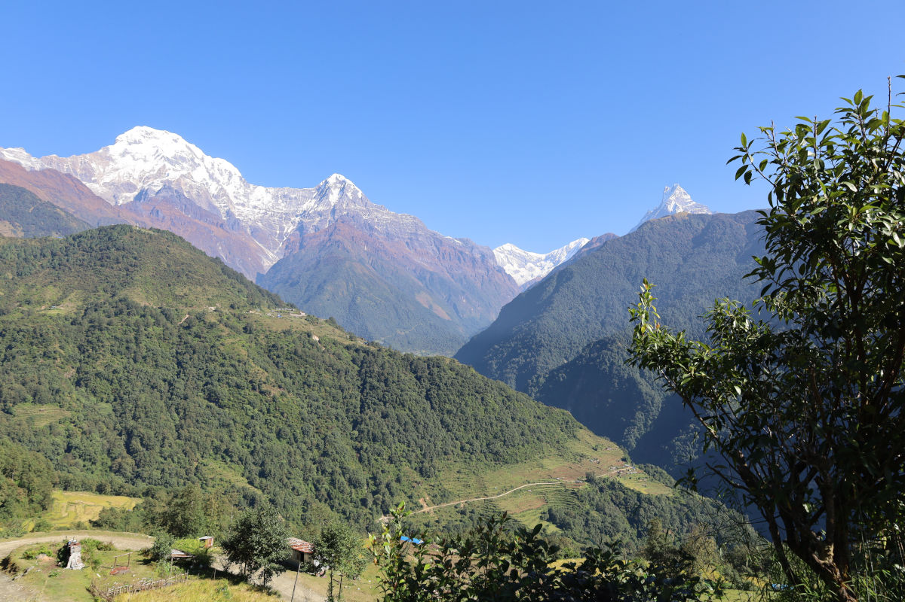
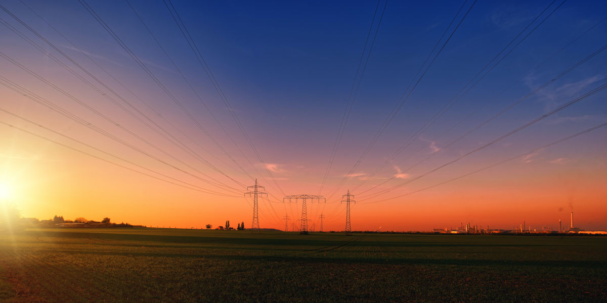

Exploring sustainable energy systems, policy innovation, economic transformation, data visualization, and practical energy modeling tutorials.
Data visualization, Dashboard, In-depth Insights for students, researchers, policy makers and stakeholders.

Nepal has made remarkable strides in electricity access — growing from just 18% in 1996 to 99% in 2025. Yet having a grid or off-grid connection is not the same as benefiting from electricity.
Read Blog →Macroeconomic overview, earthquake and covid-19 shock events, dominance of service sector, and energy and electricity consumption trends and insights.
Read Blog →
Understanding population and households distribution, energy access, economy and households assets and welfare across the provinces in Nepal.
Read Blogs →
Population and households distribution, cooking energy access, household assets across the districts in Nepal.
Read Blog →
Data visualization of socio-economic status and insights of local-levels in Nepal.
Read Blogs →
Exploring recent trend in importing electric, hybrid and non electric vehicles and their impact on electricity demand and economy in Nepal.
Read Blogs →Exploring recent trend in importing household electric appliances and their impact on electricity demand and economy in Nepal.
Read Blogs →
Forthcoming........
Read Blogs →Research Articles, Tutorials, and insights, for students, researchers, analysts, and policymakers.
The residential sector is a major energy consumer in Nepal, with cooking being a primary end-use. Unprocessed solid biomass fuels are the main cooking fuels, with about 60% of households relying on them. However, LPG, which is entirely imported, is becoming popular in urban areas. Electricity, mainly generated from hydropower, an environmentally friendly domestic energy source, was used for cooking in less than 1% of households. This paper analyzes the cost economics of different technologies and fuels, or their combinations, for household cooking across different topographies in Nepal from both private and social viewpoints. It shows that electricity is generally cheaper than fossil fuels but more expensive than biomass from a private perspective. When accounting for local air pollutant costs, especially PM2.5, electricity emerges as the most affordable option for cooking, except for biogas, which also has minimal external costs. The study further explores the broader economic advantages of replacing imported LPG with domestic hydropower for household cooking.
Read Article →
A beginner-friendly End Use Energy Demand Anlysis for Developing Coutries using open-source datasets. Forthcoming ....................
Read Article →
Understanding of existing motorized and non-motorized transport services is a key challenge for landlocked Nepal in addressing sustainable transport system development. This paper assesses mobility and estimates current travel demand, energy use and emissions from different transport modes for Kathmandu (capital city) and for rest of the country. Road transport dominates all transport modes in Nepal. In per-capita terms, country's motorized road passenger travel (1461 km) is amongst the lowest in the world. Private vehicles (mainly motor cycle) in Kathmandu and public vehicles (mainly bus) in rest of the country, dominate road passenger travel. Trucks dominate in freight transport services. More than half of country's total commercial energy is consumed by transport sector. Kathmandu alone consumes country's half of gasoline and 20% of diesel supply. The current level of country's road energy use, based on road energy use index, remains one of the lowest in the world. However, emissions of local air pollutant from motor vehicles are significant and they are likely responsible for deteriorating air quality in the country's urban areas. Although less significant in the global context, transport sector is responsible for more than half of country's total energy-related CO2 emissions.
Read Article →Nepal has suffered heavily from local and transboundary air pollution, particularly PM2.5. Coal-fired brick production is one of the main sources of air pollution. The government has prioritized the agenda of reducing the air pollution from the brick industry, for which an economic analysis of adopting cleaner production technologies is imperative. This study analyzes the economics of various options to adopt cleaner technologies and reduce coal consumption to lower emissions from Nepal's brick industry. The results show that private costs of brick production vary from NRs 15.6 (US$ 0.12) per brick to NRs. 44.2 (US$ 0.34) per brick, depending on production technologies. If costs of externalities of major local air pollutant, PM2.5, and global emission, CO2, are accounted for, social costs or the sum of private and externality costs, of brick production would be 18 % to 131 % higher than the private costs depending upon the production technologies. A 50 % hike in coal prices would increase brick prices from 11 % to 35 %. Similarly, brick production costs would increase by 2 % to 6 % at a US $10/tCO2 carbon tax and 12 % to 36 % at a US$100/tCO2 carbon tax. Brick production costs would drop if wood pellets were mixed with coal, partially replacing it. At current prices, an equal mixing of coal and wood pellets would reduce production costs by 13 % in zigzag kilns. Findings of the study imply that increased coal pricing either through increased import duty or introduction of a carbon tax, and substitution of coal with pellets or cofiring provisions, and increased use of non-fired or alternative bricks would be esired policy options to reduce coal consumption in the brick industry in Nepal. However, implementation of these policies requires the availability of lower-cost clean alternatives by altering existing policies in the supply chain, particularly forest policies. Additional promotional policies, such as pricing and mandatory use in selected applications, would help promote non-fired alternative bricks.
Read Article →
In recent years, the Nepal government has recognized and prioritized several clean energy initiatives in its national plans and policies. Despite this, more than two-thirds of households still rely on traditional biomass, as their primary source of energy, for cooking and heating, making the household fuelwood consumption per person in Nepal among the highest in the world. However, why households' transitions to clean energy for cooking is slow has been poorly understood. Using energy-specific information from the World Bank's Multi-Tier Framework (MTF) survey and the Nepal government's Multiple Indicator Cluster Survey (MICS), the cooking and heating energy consumption situation of households across the provinces by rural and urban areas is analyzed briefly. Also, a simple levelized cost of cooking is estimated using different fuel-technology combinations. The main findings of this paper are: limited availability, unreliable supply and high costs are hindering households' transitions to clean energy from traditional biomass; the combination of fuelwood, liquified petroleum gas and other clean energy sources (multiple fuel stacking) are common within the same household; and, the use of biogas, and to some extent, solar power, for cooking is limited to scale and geographical location. It is expected that electricity will be the most economic and common primary clean cooking energy option for households in the future provided that the government has the policy to address the reliability concerns of electricity and that it is affordable for low income households.
Read Article →
The Logarithmic Mean Divisia Index (LMDI) method of complete decomposition is used to examine the role of three factors (electricity production, electricity generation structure and energy intensity of electricity generation) affecting the evolution of CO2 emissions from electricity generation in sevencountries. These seven countries together generated 58% of global electricity and they are responsible for more than two-thirds of global CO2 emissions from electricity generation in 2005. The analysis shows production effect as the major factor responsible for rise in CO2 emissions during the period 1990 to 2005. The generation structure effect also contributed in CO2 emissions increase, although at a slower rate. In contrary, the energy intensity effect is responsible for modest reduction in CO2 emissions during this period. Over the 2005 to 2030 period, production effect remains the key factor responsible for increase in emissions and energy intensity effect is responsible for decrease in emissions. Unlike in the past, generation structure effect contributes significant decrease in emissions. However, the degree of influence of these factors affecting changes in CO2 emissions vary from country to country. The analysis also shows that there is a potential of efficiency improvement of fossil-fuel-fired power plants and its associated co-benefits among these countries.
Read Article →This platform shares interdisciplinary research and applied insights connecting economy, environment, technology, governance, and energy systems for sustainable development in emerging regions across the globe.